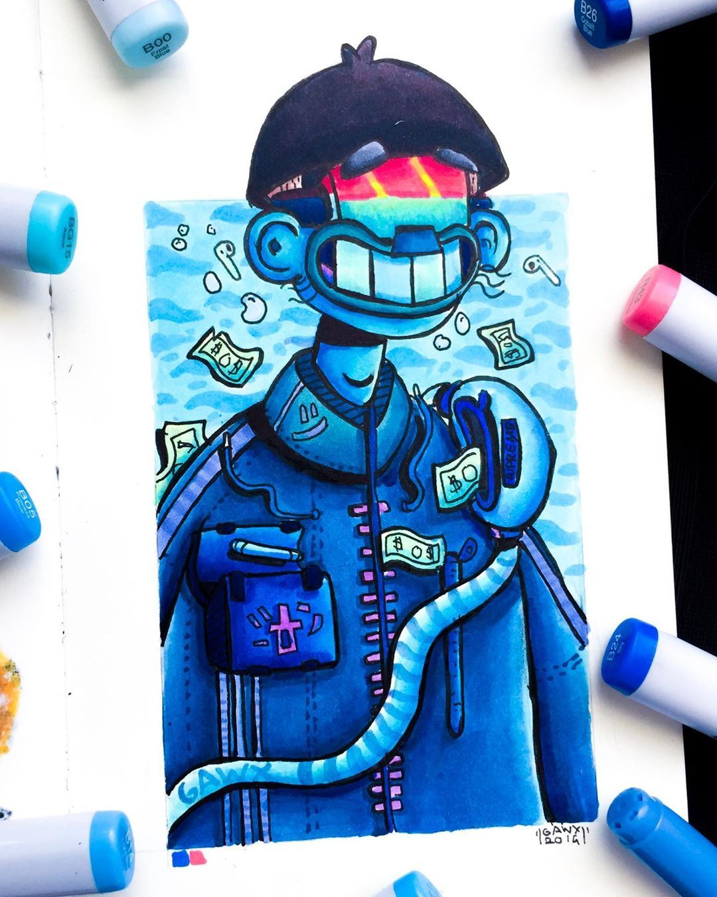
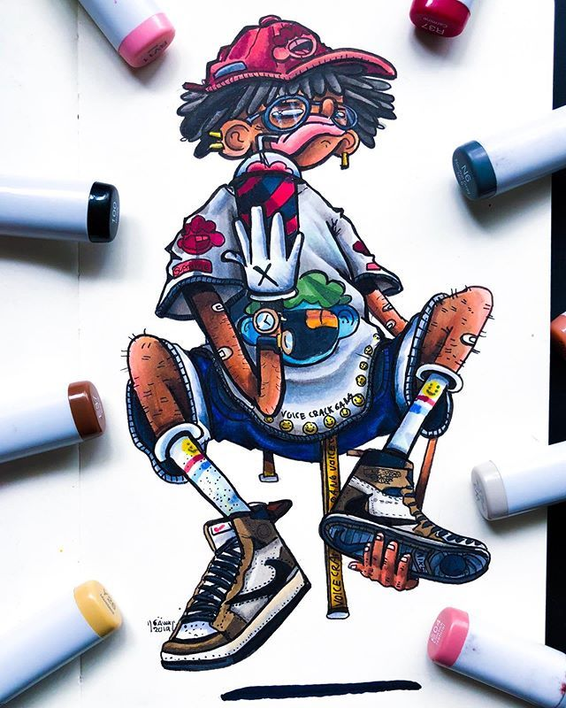
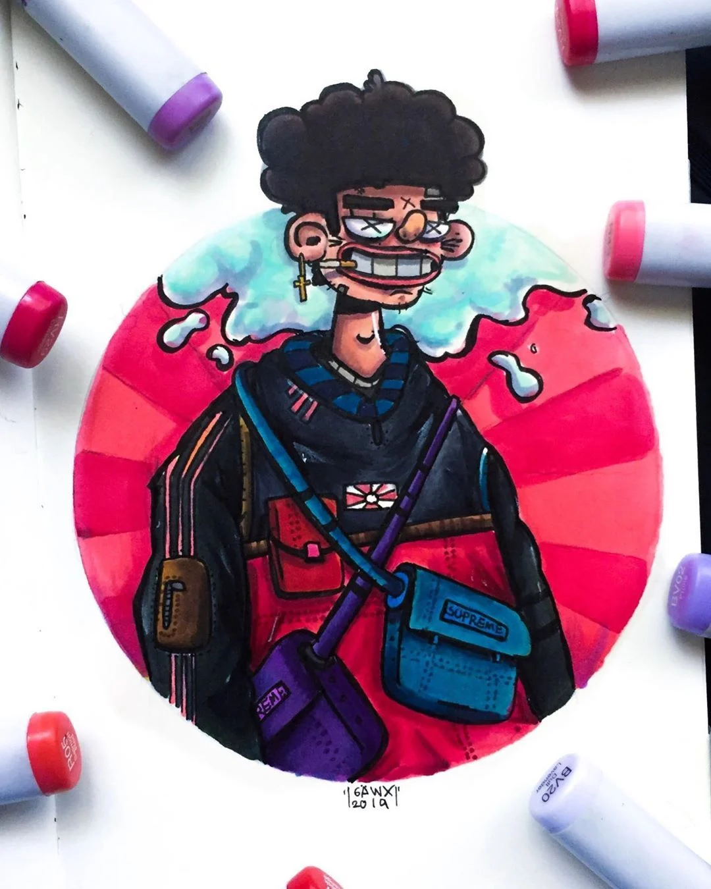
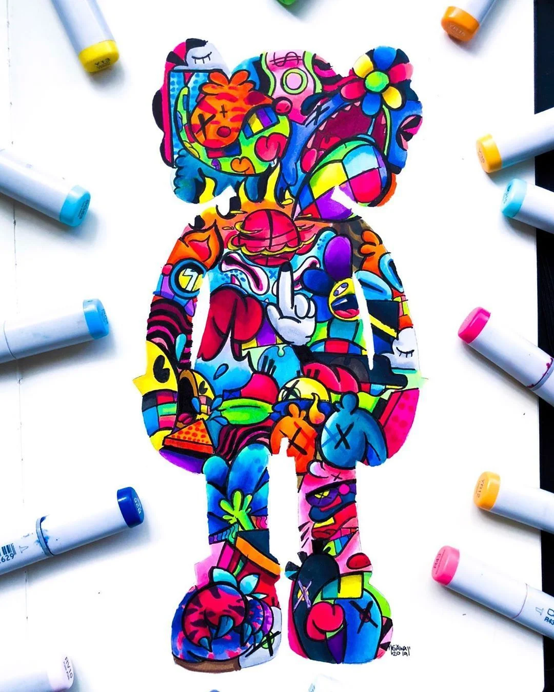

Gawx: My Favorite Doodle Artist
I found Gawx on YouTube back in the 8th grade. I love to doodle and at the time I didn't know that doodle art was even a thing. Then I found Gawx. Gawx is a creator of something very detailed that looks like something so effortless but so technical at the same time. He uses very bright colors that bring that whimsical and goofy feel to the art. I truly do enjoy what he creates and aspire to one day be able to draw in such an amazing way.
Here's A few of his drawings:




Back to First page